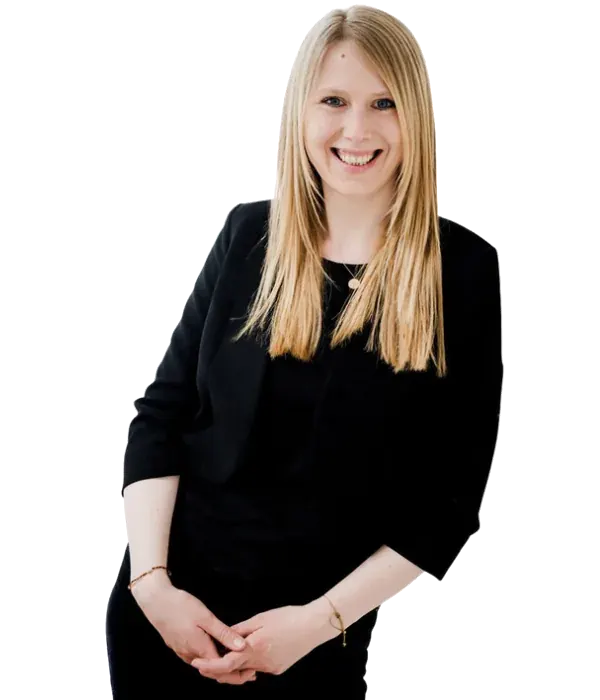

You talk. But you no longer connect.
Every conversation follows the same pattern. Unspoken frustrations erode trust and make working together harder.
And strong founding teams sometimes need support. When tension between co-founders threatens trust, collaboration or the future of your company, we help create space for clarity again.

When personal tension grows, trust and decisions become harder — and sometimes the future of the business is at stake. Does any of this sound familiar?
Every conversation follows the same pattern. Unspoken frustrations erode trust and make working together harder.
Strategy, responsibilities, effort or equity create tensions that do not resolve themselves.
You are at a crossroads. Stay together, redefine your partnership or part ways — without further escalation.
You do not need to know yet whether you will stay together or go separate ways. The first step is to speak constructively and make conscious decisions again.
Not a one-size-fits-all formula, but a structured path to listening, understanding and making decisions together.
We uncover what is really going on — and the underlying needs behind each position.
A neutral, protected space makes it easier to listen and talk about difficult topics.
We explore realistic next steps — for a sustainable partnership or a respectful transition.
An initial conversation can bring perspective. Sometimes a longer joint process is the right choice. We tailor the approach to your situation.
A confidential first session to understand the situation, explore possible paths and identify a next step. You can attend on your own.
ONLINE OR IN PERSON · BY ARRANGEMENTA guided conversation for founding teams who feel stuck and want to rebuild communication and define workable agreements.
TAILORED ENGAGEMENTSupport through major changes, shifting roles or a possible separation — focusing on the human side of the transition.
INDIVIDUELLER RAHMENMediation is not legal advice. Seek independent legal counsel for contractual, equity or corporate law matters.
Three illustrative founder perspectives showing the kinds of challenges that can arise in founding teams.
“We spent months arguing about the same decisions. The breakthrough was understanding what we really needed to talk about.”
“I did not want a personal conflict to put our startup at risk. An outside perspective could have helped us talk about the real issues sooner.”
“We did not need to decide immediately whether to stay together. First, we needed a space where both perspectives could be heard.”
I am a trained mediator and conflict advisor with a legal background. I support people in finding their way back into conversation — especially when things feel stuck.
As the wife of a founder, I see the daily realities of building a company up close: responsibility, pressure and constant decisions. I also work with many female founders and understand the tensions between relationships, leadership and business.
I listen, stay impartial and create a safe environment for new perspectives and constructive next steps — without telling you what your answer should be.
Yes. You can begin with an individual conversation. Joint mediation requires everyone involved to participate voluntarily.
Discretion is fundamental to our work. We agree on the scope of confidentiality and data protection before starting.
Both. Sessions can take place online or, by arrangement, in person in Germany and Austria. We agree on location and format individually.
Mediation does not mean you must remain together. It can also help you clarify a respectful way forward. Legal arrangements should be handled with independent counsel.
We agree on the format, duration and fee before confirming an appointment. Longer mediation engagements are quoted individually.
Clarity can start with a single conversation. Tell me confidentially what is happening, and we can explore the next step.
Request a confidential conversationOnline & in person · Germany & Austria